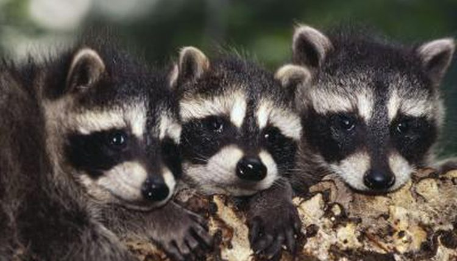

너구리의 학명은 Nyctereutes procyonoides입니다. 속명의 뜻은 라틴어로 Nukt- 는 밤을 뜻하고 ereutes는 방랑자를 뜻하죠. 즉 밤에 돌아다니는 방랑자인 셈입니다. 종명의 pro는 -전 혹은 '작은'을 뜻하며 cyon은 개를 뜻합니다. 현대 라틴어에서는 prokuon을 라쿤(raccoon, Procyon lotor)으로 지칭하기도 한답니다. 라쿤과 너구리는 매우 유사하게 생겼지만 실제로는 전혀 관계가 없는 동물들입니다. 결국 너구리의 학명에 뜻하는 것은 '밤에 돌아다니는 작은 개'라는 의미입니다.
너구리는 1속 1종으로만 남은 매우 독특한 동물이지요. 이 속(genus)에 한 종밖에 없다는 뜻입니다. 연구에 따르면 너구리속은 약 9백만년 전에 출현했고 당시 다른 종도 존재했지만 대부분 홍적세(Pleistocene)를 넘기지 못하고 3백 4십만년 전부터 7십 8만년 전에 멸종을 했고 지금은 너구리만 남은 것입니다.
외국 자료를 보면 사냥이나 모피교역과 도시화, 유기동물들과 질병의 문제로 그 수가 감소하고 있다고 알려졌지만 현재 우리나라의 개체수는 줄어들고 있다고 말하기 어려울 것 같습니다. 너구리의 수렵을 허용하고 있지 않는 우리나라에서의 주된 위협요인은 질병과 도로교통사고로 보입니다.
교미철은 지역에 따라 이른 2월부터 4월까지로 알려져 있습니다. 다만 우리나라에서 너구리 새끼들이 신고되는 양상을 보면 대개 4월 중순에서 5월 초순에 분만을 하는 것 같습니다. 너구리의 임신기간은 61-70일 정도로 알려져 있는데, 이를 바탕으로 판단해보면 2월, 3월이 주된 교미기가 아닐까 추정합니다. 너구리는 일부일처제를 유지하는 동물로 알려져 있고, 가을 경에 쌍을 맺는답니다. 그럼 겨울을 같이 보내겠군요.하지만 사육 상태에 있는 수컷 너구리의 경우 4-5마리의 암컷과 관계를 유지한 것도 보고된 바 있습니다. 양다리가 아닌 문어다리입니다. 짝을 차지하기 위해 수컷들 간의 경쟁이 있는데, 이때는 짧게 다툼을 하며 치명적인 상처를 입히지는 않는답니다. 짝짓기는 밤과 새벽에 이루어지며 평균 6-9분 정도랍니다.
암컷의 발정은 몇 시간에서 6일까지 지속되며 5번 이상의 짝짓기가 그 기간에 이루어집니다. 재미있는 것은 이때 임신이 되었더라도 20-24일 후에 다시 발정을 한답니다. 그래서 새끼들을 많이 낳는 것일까요? 60-70일에 이르는 평균 임신기간과 4-5월에 분만을 합니다. 일반적으로는 8-10마리 정도의 새끼를 낳지만 경우에 따라 15-16마리까지도 보고된 바 있답니다. 어마어마하죠? 우리나라에서도 10마리 넘게 낳는 사례도 종종 확인되었습니다. 이러한 특징은 개과에서는 가장 많은 분만수를 기록하는 것입니다. 일반적으로 초임의 경우 임신 경험이 있는 개체에 비해 새끼를 적게 납니다.
태어날 때 새끼의 체중은 60-110g 정도로 태어나며 눈은 못 뜨고, 짧고 조밀하며 부드러운 짙은 갈색털이 나 있습니다. 9-10일 만에 눈을 뜨고 그 후 14-16일에 이가 돋기 시작합니다. 다시 10일 정도 지나면 겉털이 나기 시작하는데 엉덩이와 어깨에서 시작합니다. 약 2주 정도가 더 지나면 눈 주위를 제외하고 색이 밝은 털이 나기 시작합니다. 포유기간(젖먹이는 기간)은 45-60일 정도가 됩니다. 생후 3주부터 1개월이 지나면 잡아온 먹이를 먹기 시작합니다만 이때에도 젖을 빨기는 합니다.약 4.5개월 정도(핀란드 연구에 따르면 5-7개월 정도가 소요된답니다) 지나게 되면 완전히 성장하는 단계로 접어들며, 어미로부터 독립하는 시기는 8월 말에서 10월 초입니다. 조사한 바에 따르면 어린 개체들의 방랑 거리가 이때 굉장히 멀어지고 직선적으로 변해간답니다. 10월 경에는 거의 성체 크기로 자란 새끼들의 경우 짝을 찾기 시작하고 성 성숙은 8-10개월령이 되면 일어납니다. 수명의 경우 거의 알려져 있지 않지만 6-7년생이 야생에서 확인된 바 있으며, 사육 개체는 11년까지 생존한 바 있답니다.
너구리는 개과동물들 중 동면을 하는 유일한 동물로 알려져 있습니다. 초겨울까지 피하지방을 18-23%, 복강지방을 3-5%까지 축적합니다. 이 정도 수준까지 체지방을 축적하지 못한 경우 겨울철에는 죽는다고 알려져 있습니다. 겨울 동면시기에는 체내 대사율을 25%까지 떨어뜨리기도 한다는군요. 하지만 러시아의 우수리지방과 같은 곳은 겨울폭풍이 오는 시기에만 잠깐 동면을 한다고도 합니다. 겨울철에 적설량이 15-20cm까지 쌓이면 신체활동을 줄이고, 굴에서 150-200m 정도까지만 움직인다고 하는군요. 먹이가 더 풍부해지고 암컷의 발정이 시작될 무렵인 2월부터 활동성이 증가하기 시작합니다.
하지만 한국의 상황은 좀 다른 것 같습니다. 한국에서는 웬만하면 동면하는 개체가 없을 정도입니다. 특히 위의 자료가 연구된 핀란드보다는 위도가 한참 낮아서 겨울철의 추위가 심하지도 않고, 적설량도 많지 않아 너구리의 활동을 제약할 조건이 그리 심하지 않고, 식물성 먹이가 다소 줄기는 할 터이지만, 여전히 먹이 구하기가 그리 어려운 것만은 아닐 겁니다. 그래서 한국의 너구리는 짧은 시간을 굴에서 쉬는 기간을 제외하고서는 동면을 하는 것 같지는 않습니다.
다른 개체들과 함께 소통을 위해 공동화장실을 사용하기도 합니다. 이 공동화장실은 그 지역에 있는 다른 개체들이 함께 사용하는 명확한 장소이죠. 연구에 따르면 이 공동화장실을 사용하는 것은 각 가족 구성원은 물론 외부침입자들 간의 정보를 소통하는 목적으로 이용한다고 하는군요. 이러한 과정은 주로 후각적인 감각을 통해 동일종 내부에서 각 개체를 인식하기 위한 방법으로 사용된답니다.
여우처럼 짖지는 않습니다. 대신 끙끙대는 신음소리 같은 소리도 내지요. 다양한 소리를 내기는 하지만 매우 특징적인 소리는 없습니다. 다만 공격하거나 방어를 할 때는 매우 날카로운 "꺅-"하는 괴성을 지르기도 합니다. 으르렁대기도 하지만 심하게 소리가 크지는 않습니다.
이러한 후각/시각적 소통 외에도 다양한 자세를 통한 소통의 방법도 있습니다. 예를 들면 꼬리의 위치를 통해 우월성이나 발정의 준비 여부에 대해 나타내기도 하죠. 직접적인 접촉은 주로 부모 자식간, 부부간에서 중요한 소통의 수단이 됩니다.
영상설명 : 고양이들의 음식을 먹는 라쿤은 시리얼 그릇처럼 물에 섞는 것을 좋아한다. 그녀가 맨 마지막에 어떻게 손을 꽉 쥐고 도망치는지 우습다.
영상설명 : 라쿤이 새로운 친구를 만났어요! 그는 검은 독일산 셰퍼드를 데리고 가서 어떻게 수영을 하는지 보여주기로 결정했다. 독일 셰퍼드는 처음에는 약간 걱정스러웠지만, 곧 적응했답니다! 이 너구리와 개는 멋진 짝입니다! 그들은 수영하는 것을 좋아하고 너구리와 개 한 마리가 수영하는 것은 쉽게 볼 수 있는 장면이 아니에요!